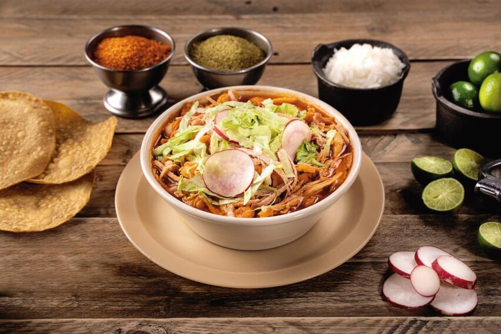
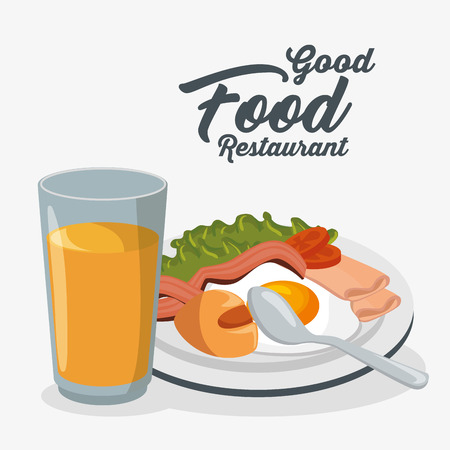

Pasos Relevantes:
• Descargar e instalar la aplicación desde la tienda de aplicaciones.
• Registrar una nueva cuenta o iniciar sesión con una cuenta existente.
• Proporcionar información personal, como nombre, dirección y número de contacto.
• Verificar la dirección de correo electrónico o el número de teléfono (si es necesario) para la seguridad de la cuenta.
Consideraciones de Inclusividad:
Proporcionar una opción de registro sin requerir información sensible, como género, edad, discapacidad motora o mental, para mantener la privacidad o, por el contrario; dar aviso de alguna discapacidad o circunstancia especial que posea el usuario.

Pasos Relevantes:
• Iniciar sesión en la aplicación (si aún no lo han hecho).
• Ingresar su ubicación actual o permitir que la aplicación acceda a la ubicación del dispositivo.
• Ver una lista de restaurantes cercanos.
• Seleccionar un restaurante específico.
• Explorar el menú y los platos disponibles.
Consideraciones de Inclusividad:
Proporcionar opciones de búsqueda tanto por texto como por voz para adaptarse a diferentes preferencias y capacidades.
Pasos Relevantes:
• Seleccionar los platos y bebidas deseados del menú.
• Agregar los elementos al carrito de compras.
• Revisar el pedido y realizar modificaciones si es necesario.
• Proporcionar detalles de entrega, como la dirección y las instrucciones adicionales.
• Elegir el método de pago y proporcionar la información de pago.
• Confirmar el pedido.
Consideraciones de Inclusividad:
Ofrecer opciones de pago variadas, incluyendo tarjetas de crédito, PayPal y posiblemente métodos de pago en efectivo para atender a diferentes usuarios.
Proporcionar un asistente virtual o chat de soporte para ayudar a aquellos que puedan necesitar asistencia adicional durante el proceso de pedido.

Pasos Relevantes:
• Iniciar sesión en la aplicación (si aún no lo han hecho).
• Seleccionar la opción de "Donar una comida".
• Elegir la cantidad de comidas que desean donar.
• Seleccionar una organización o beneficiario para la donación, si es posible.
• Confirmar la donación.
Consideraciones de Inclusividad:
Proporcionar información sobre las organizaciones o programas a los que se destinan las donaciones para que los usuarios se sientan seguros al donar.
Ofrecer opciones de redondeo de factura para que los usuarios puedan donar fácilmente pequeñas cantidades adicionales con cada pedido.
❖ Marmolejo Hernández Azul Pamela
❖ Narváez Silva Diana Laura
❖ Pulido Pérez Pablo Axel
❖ Rodríguez Urbina Grecia de Jesús